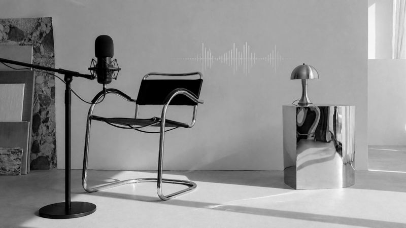

Today
Good morning, Katie.
Four things need your eye. Everything else is handled.
Waiting for your approval
4 items
Three clips from this week’s episode
Captions written in your voice, black-and-white grade, subtitles burned in. Set for Wed, Fri and Sun at 7:30 am.
Approved — scheduled“A Little More Inward” — this week’s letter
Subject: The quiet question underneath the busy week · 2,418 subscribers.
Approved — scheduledFour quote cards from the Inward Philosophy
Black and white, your typeface. Posting Monday as a carousel.
Approved — scheduledFive replies drafted in your voice
Thank-yous and listener questions. Anything personal has been held back for you.
Approved — sentFor you personally
1A listener shared something personal. Your assistant hasn’t replied — this one is yours.
Today
Schedule- 10:00AMDiscovery call — Elena R.Coaching enquiry · Zoom · prep notes ready
- 1:30PMCoaching session — Client M.Session 4 of 8 · prep ready
- 4:00PMRecord next week’s episodeStudio · outline drafted
To-dos
3 open- Choose a date for the summit keynote hold
- Record 30-second intro for the Members circle
- Send speaker kit to the event planner
- Pick this month’s Circle prompt (3 options drafted)
Podcast
The pipeline
Record. Your assistant edits, writes, schedules and publishes — you approve.
On saying the quiet thing out loud
Why we perform — and how to stop
The life beneath the life
Learning to hear yourself again
Learning to hear yourself again
Boundaries as self-trust
Feeling it without fixing it
One episode → a week of content.
Show notes
Summary, timestamps and links, written from the transcript.
Blog post
A 900-word Journal piece adapted from the episode, in your voice.
This week’s “A Little More Inward” letter, built around the episode.
Quote cards ×4
Black-and-white cards with your best lines, sized for Instagram.
Short clips ×3
Vertical clips with subtitles for Reels, Shorts and TikTok.
Reflection prompts ×3
Questions for listeners — shared in the Circle and the letter.
The YouTube package.

 0:380:440:29
0:380:440:29Nothing publishes without your tap. Example data.
Inbox
Every message, sorted.
Instagram, YouTube and email in one place. Replies drafted in your voice; nothing sends without you.
Coaching
Your practice.
Enquiries screened, calls booked, prep written — so you arrive fully present.
Enquiries
Fit summary by your assistant| Who | What they shared | Status | |
|---|---|---|---|
| Elena R.via email · yesterday | Listener for months; feeling disconnected after a career peak. Wants 1:1. | Call today 10:00 | |
| Natalie G.via website · 2 days | Navigating a big transition; asks about a 3-month container. | New | |
| Marcus T.via Instagram · 3 days | Asked about couples work — likely not a fit. Gentle referral drafted. | Review |
Session prep
1:30 pm- Client
- Client M. · session 4 of 8
- Last time
- Noticed how often she says “I’m fine.” Committed to one honest no this week.
- Her note
- “I said no to a board seat. Felt terrifying, then light.”
- Suggested
- Begin with the body — what did the “light” feel like? (Feel It · Trust Yourself)
- Private
- Your private notes stay private — never used for content.
Speaking
Stages & rooms.
Planner enquiries answered with your kit, dates held, fees and travel tracked.
Enquiries
2 new| Event | Date | Topic | Status |
|---|---|---|---|
| Leadership retreatRachel B. · 60 senior women | Mar 12 | Stop Performing Your Life | New |
| Private client eveningWealth advisory firm · 120 guests | Feb 6 | The Life Beneath the Life | New |
| Women in business summitKeynote · 800 | Apr 23 | The Courage to Be Honest | On hold |
| Wellness conferenceFireside · 300 | Jan 29 | Turning Inward | Confirmed |
March
DatesNewsletter
A Little More Inward.
One letter a week, drafted from your episode. No constant noise. Just something worth opening.
A Little More Inward.
Hi friend,
This week I kept noticing how often I answer “busy” when someone asks how I am. It’s true. It’s also a very good place to hide.
What would you hear if the week went quiet for ten minutes?
In this week’s episode I talk about the life beneath the life — the part that keeps speaking even when we’re too occupied to listen.
Three questions to sit with this week are waiting in the Circle.
Turn inward,
Katie
Example draft written by the assistant in Katie’s voice.
This send
Recent letters
- 31On feeling it without fixing itOpened 63% · 41 replies
- 30Boundaries as self-trustOpened 59% · 28 replies
- 29Running as a practiceOpened 62% · 35 replies
Members circle
The Inward Circle.
A private, moderated room for listeners who want to go deeper.
Recent in the Circle
Moderated“Hear Yourself” — I realised I ask three people before I trust my own answer.
Ran my first 10k without headphones, just to listen. Thank you for the nudge.
A post mentions a hard personal situation. Held until you or a moderator looks.
Could we do a session on boundaries at work?
“Where in your life are you performing instead of living?”
Inspired by “Stop Performing Your Life.” Two alternatives drafted.
Numbers
How Inward is growing.
The few numbers that matter, on one page. A summary arrives the first of every month.